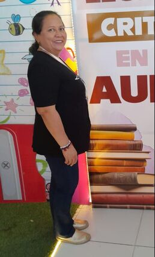

MALVIS ALGARÍN
Docente de tercer grado de la Sede San José, comprometida con el acompañamiento y desarrollo integral de sus estudiantes. Su labor pedagógica se desarrolla mediante experiencias y actividades que favorecen el aprendizaje significativo, la participación, la convivencia y el fortalecimiento de los valores institucionales.
Con una trayectoria de más de 15 años en el sector educativo, ha liderado proyectos de democracia escolar, festivales culturales y actividades de integración comunitaria, fortaleciendo el vínculo entre la escuela y la comunidad.
Principios Educativos
Aprendizaje Significativo
Construir conocimiento a partir de las experiencias y saberes previos de los estudiantes, conectando con su realidad.
Formación Integral
Desarrollar competencias cognitivas, socioemocionales y éticas que preparen para la vida y la ciudadanía.
Innovación y TIC
Integrar herramientas tecnológicas y metodologías activas para potenciar el aprendizaje y la creatividad.